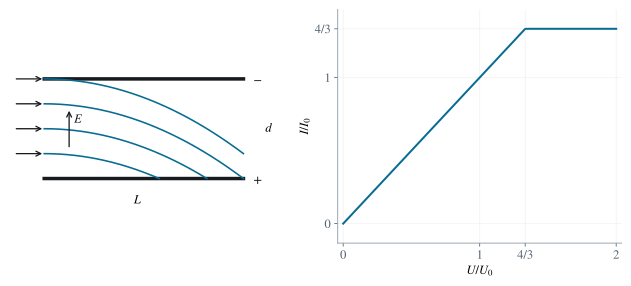

P0010 · 思维训练
静电除尘的效率与电流
从横向飞行时间得到收集高度与饱和电流。
1 题目
1.1 物理情境
静电除尘通道长为 、宽为 ，上下平行板间距为 。含尘气流沿水平方向匀速进入；下板吸收落到其上的带电尘粒。
1.2 物理过程
板间施加电压后，尘粒保持水平速度，同时在恒定电场力下向下加速。通过增大电压，提高在离开通道前触及下板的比例。
1.3 已知参数和理想化假设
尘粒质量 ，电荷 ，，入口水平速度 ；入口尘粒按体积均匀分布，数密度为 。当电压为 时，除尘效率为 ，收集电流为 。下板电势较高，板间电场向上。忽略重力、空气阻力、空间电荷效应及边缘场。
1.4 求解目标
- 求板间距 。
- 求完全除尘所需的最小电压。
- 求收集电流随电压 的关系。

图 1. 平行板除尘器中的沉降轨迹及电流的饱和特征。
2 解答展开 / 收起
2.1 运动与沉降高度
取入口时到下板的高度为 。水平运动不受力，因此不被吸收的粒子穿过通道需要 。向下加速度为 ，故在这个时间内的下落距离为
一个粒子能被下板吸收，当且仅当 。入口高度均匀，所以除尘效率为
2.2 由已知效率反求板距
，因此处于未饱和段，可以直接令括号中的线性表达式等于 。
2.3 完全除尘阈值
最后能够沉降的是紧邻上板进入的粒子。令其恰好在通道出口落到下板，即 。
2.4 粒子数通量与收集电流
单位时间流入的气体体积为 ，总尘粒数通量为 。每个被吸收粒子贡献电荷量绝对值 ，所以电流大小为 。由 消去数密度，得到
饱和以后继续增大电压只会缩短落板时间，不能增加进入装置的尘粒数。因此电流图像为直线接水平平台。这里的电流取绝对值，常规电流方向与负电荷流动方向相反。
3 方法与讨论
同一装置在电场和磁场下对应不同的运动方程。分别由到达板端前的最大位移求接收入口区间，然后利用相同入口分布比较比例。若束流均匀变量发生变化，最后一步的长度比也要随之改为相应积分。